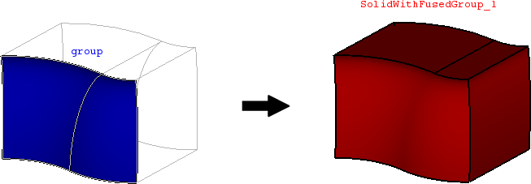

cfdmsh 4.0 documentation
cfdmsh 4.0 documentation cfdmsh 4.0 documentation


Fuse faces inside a face group, be it in a solid or a shell.
This function makes a FuseShellFaces operation of the input group, then uses untouched sub-shapes to rebuild its main shape.
def FuseGroupFaces( group = None, np = 400, add = True ):

| Name | Description | Type | GUI selection [?] | Selection by name [?] | Recursive [?] | Default value |
|---|---|---|---|---|---|---|
| group | The face group to fuse. | Group of Faces | yes | yes | - | [None] |
| np | See here. In this case, the number of point is approximatively respected. |
Integer | - | - | - | 400 |
| add | See here. | Boolean | - | - | - | True |
| dim Value [?] | single Value [?] | Type | Number | Name |
|---|---|---|---|---|
| - | - | Solid or Shell | 1 | "SolidWithFusedGroup" or "ShellWithFusedGroup" |
from cfdmsh import * # To adapt to the cfdmsh installation method
divided_cylinder = geompy.MakeDividedCylinder(100, 300, GEOM.SQUARE)
boundary_faces = GetBoundaryFaces(divided_cylinder)
shell = geompy.MakeShell(boundary_faces)
solid="geompy".MakeSolid(shell)
AddToStudy(solid, "solid")
group = geompy.CreateGroup(solid, geompy.ShapeType["FACE"])
geompy.UnionIDs(group, [44, 61])
AddToStudy(group, "group", father = solid)
solid_with_fused_group = FuseGroupFaces(group)
-
cfdmsh 4.0 documentation
tougeron-cfd.com © 2016